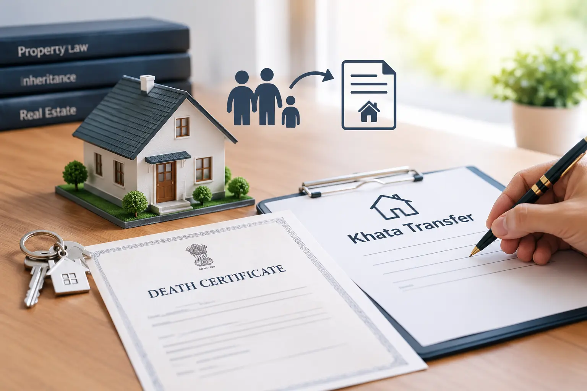

Khata Transfer After Death in Bangalore: Legal Heir Documents, Steps and Common Problems
To transfer a khata after the owner's death in Bangalore, the legal heirs (or the person named in a will) apply for a khata change with the death certificate, a legal heir certificate or the will, the existing khata, a tax receipt and ID proof. Other heirs' consent or a release is added where one heir will take the property.
A khata is a civic property record used for property-tax administration and related services. Updating it after an owner's death is separate from establishing inheritance rights or resolving a dispute about ownership. The correct documents depend on whether there is a will, who the legal heirs are and whether they agree on how the property should be recorded.
Bengaluru's civic administration and online services are changing. The former BBMP structure has been replaced by the Greater Bengaluru Authority and city corporations. Confirm the current portal, responsible office and checklist for your property's jurisdiction before applying.
What to Do First
Obtain the death certificate
Check that the deceased owner's name and other details are correct.
Identify the legal heirs
Check whether there is a will and obtain the relevant legal heir documentation. Do not assume the person paying property tax is the only heir.
Collect the existing property records
Keep the khata certificate and extract, latest tax receipt and title documents ready.
Decide how the heirs will be recorded
If one heir is to take the property alone, get advice on the appropriate registered release deed or family settlement.
Confirm the official application process
Check the current civic portal and submit the applicable application with the required documents.
Documents Usually Needed
Prepare the documents relevant to your case and confirm the final checklist with the responsible civic authority.
- Death certificate: Proof of the registered death of the previous owner.
- Legal heir certificate: Where required to identify the surviving legal heirs; confirm the applicable issuing authority and procedure.
- Will and related documents: If the deceased left a will, obtain legal advice on the documents and formalities applicable to it.
- Existing khata certificate and extract: The current civic property record, where available.
- Latest property-tax receipt: Check the tax account and any outstanding dues.
- Title documents: The deceased owner's deed and relevant earlier ownership records.
- Identity and address proof: For the applicants and heirs as requested by the authority.
- Consent or registered release deed: Where applicable if one heir is to take the property rather than the heirs being recorded together.
- Application acknowledgement and additional records: Keep these and provide any further documents requested for your case.
This is a preparation list, not a guarantee that every item will be sufficient. Requirements can vary by ownership history, the will, the family situation and the property's civic jurisdiction.
How to Transfer Khata After the Owner's Death
Step 1: Check the existing property record
Collect the khata certificate and extract, property-tax receipt and title deed. Compare the deceased owner's name and the property identifiers across the records. Resolve material discrepancies rather than entering inconsistent details in an application.
Step 2: Obtain the death certificate
Make sure the death is registered and keep a clear copy of the certificate. If names or other particulars do not match the property documents, seek guidance on correcting or explaining the discrepancy before applying.
Step 3: Establish the relevant inheritance documents
Where there is no will, the heirs may need a legal heir certificate and other supporting documents. In Karnataka, enquire with the relevant revenue authority or Nadakacheri service about the current procedure. If there is a will, do not assume that the will alone settles every question; the appropriate legal formalities depend on the facts and applicable law.
Step 4: Decide whether the heirs will hold the record together
If the heirs have not arranged for one person to take the property alone, the civic record may need to reflect the relevant heirs together. If one heir is to take the property exclusively, seek legal advice on whether a registered release deed, family settlement or another instrument is required. Consent requirements should be confirmed for the particular application.
Step 5: Apply through the current civic process
Use the current official portal or the responsible office for the property's jurisdiction. Submit the applicable application, supporting documents and identity details, and pay the charges displayed by the official system. Save the acknowledgement and payment receipt.
Step 6: Respond to verification and check the final record
Monitor the application for queries, notices or requests for additional documents. Once processed, check the updated khata certificate and extract, where issued, for the correct names and property details. Keep the updated record with the title and inheritance documents.
Should All Heirs Be on the Khata or Just One?
The right route depends on the actual inheritance position and any valid arrangement between the heirs. A khata entry should not be treated as a substitute for establishing legal title.
| Situation | What it generally means | What to check |
|---|---|---|
| All heirs together | The relevant heirs may be recorded together where no exclusive transfer has been arranged. | Correct list of heirs, identity documents and the applicable civic requirements. |
| One heir after a release | One heir intends to hold the property alone after the others give up their shares through an appropriate arrangement. | Whether a registered release deed or another valid instrument is needed and what consent the authority requires. |
| Partition or family settlement | The family has agreed to divide or allocate property interests. | Whether the agreement must be registered, the exact property description and any additional legal formalities. |
Get legal advice before signing a release, settlement or partition document. The right instrument depends on the facts and should not be selected only to make the khata application easier.
Special Situations to Check
There is no will
The applicable personal law and family circumstances determine who inherits. Obtain the appropriate legal heir documentation and ensure that all relevant heirs are identified before proceeding.
There is a will
Keep the original will and death certificate safe. Whether probate or another legal step is necessary depends on the facts and applicable law. Get advice instead of assuming that probate is always required or never required.
A married daughter is one of the heirs
Do not exclude a daughter merely because she is married. In Hindu succession, daughters generally have inheritance rights equal to sons, subject to the applicable law and facts. Identify all heirs correctly and obtain legal advice if the family position is disputed.
One co-owner has died
The deceased co-owner's interest may pass to their heirs according to the applicable succession rules or valid will. The surviving co-owner should not assume that the entire property automatically becomes theirs. Review the title documents and the deceased person's share before applying.
The heirs disagree
If the heirs dispute the will, shares or identity of the rightful successors, a routine khata application may not resolve the dispute. Obtain legal advice about the appropriate way to settle the inheritance issue first.
For related assistance, see our property document verification, deed services and property dispute resolution pages.
Common Reasons for Delay or Rejection
Missing inheritance documents
The death certificate, legal heir details, will or supporting records may be incomplete or inconsistent.
Some heirs are not identified
Leaving out a person who may have inheritance rights can lead to objections or later disputes. Confirm the full family and legal position.
The heirs disagree about ownership
A contested will, disagreement over shares or a disputed settlement may need legal resolution before the civic record can be updated.
Property details or tax records do not match
Differences in names, property identifiers or tax records can trigger requests for clarification. Compare the records before submission.
The wrong application route is used
Portal names, civic jurisdictions and checklists can change. Confirm the current route with the responsible authority.
If an application is delayed, check the status and any outstanding query first. Keep copies of submissions and use the official grievance route where appropriate. There is no single processing time that can safely be promised for every case.
What Does Khata Transfer After Death Cost?
Costs depend on the applicable civic charges and the documents or legal steps required in the individual case. Check the current official portal or responsible office for statutory charges and payment instructions. Do not rely on old fee figures or unofficial estimates.
Legal advice, document preparation, registration of a release deed or settlement, and professional assistance may involve separate costs. Ask for a clear explanation of the work and fees before proceeding, and keep official receipts for payments.
How Marvel Consultants Can Help
Marvel Consultants can help review available property records, identify missing documents and explain practical next steps for a khata transfer after a death in the family. The support needed depends on the property's records, the inheritance documents and whether the heirs agree.
A document review does not determine inheritance rights or guarantee approval. The relevant authority decides the civic application, and disputed inheritance matters may require a qualified lawyer or court process. See our khata transfer service page or tell us about your property problem.
FAQs: Khata Transfer After Death
Can the khata be transferred after the owner's death if there is no will?
Yes. Without a will, the legal heirs apply with the death certificate and a legal heir certificate issued by the relevant authority. The khata office then records the heirs, either together or, if the family has settled it through an appropriate registered deed, the heir who is taking the property.
What is a legal heir certificate and where do I get it?
It is a document that identifies the surviving family members who are legal heirs of the deceased. In Karnataka, enquire with the Tahsildar or the relevant revenue service, including Nadakacheri, about the current application procedure and verification requirements.
What documents are needed for khata transfer after death?
Usually the death certificate, legal heir certificate or relevant will documents, existing khata certificate and extract, latest property-tax receipt, title documents and identity proof of the heirs. Consent documents or a registered release deed may be needed where one heir is taking the property. Confirm the exact list for your case.
Is probate needed for khata transfer when there is a will?
It depends on the will, the facts and the applicable law. Do not assume either way. Seek legal advice and keep the original will, death certificate and heirs' details ready.
Do all legal heirs have to be named in the khata?
If no one gives up a share, the khata may record the relevant heirs together. If one heir is to hold the property alone, the others may need to execute a registered release deed or another appropriate registered arrangement. Confirm the legal requirements and the civic office's checklist.
Is a married daughter a legal heir?
For Hindu families, daughters generally have the same inheritance rights as sons, whether married or unmarried. The actual heirs depend on whether there is a will and on the personal law that applies. Ensure that the heirs are correctly identified.
What if the legal heirs disagree?
If the heirs dispute who inherits or a will is challenged, the khata application may not resolve the underlying dispute. Seek legal advice; a court process may be necessary depending on the circumstances.
Can the khata be changed if one of two co-owners has died?
Often the surviving co-owner and the deceased co-owner's heirs need to provide the death certificate and relevant will or legal heir documents. The deceased person's share may pass to their heirs, so the khata may show the surviving co-owner and the heirs together. Have the documents reviewed before applying.
Need Help With Khata Transfer After Death?
Share the available property and inheritance documents so the next steps can be reviewed for your situation.